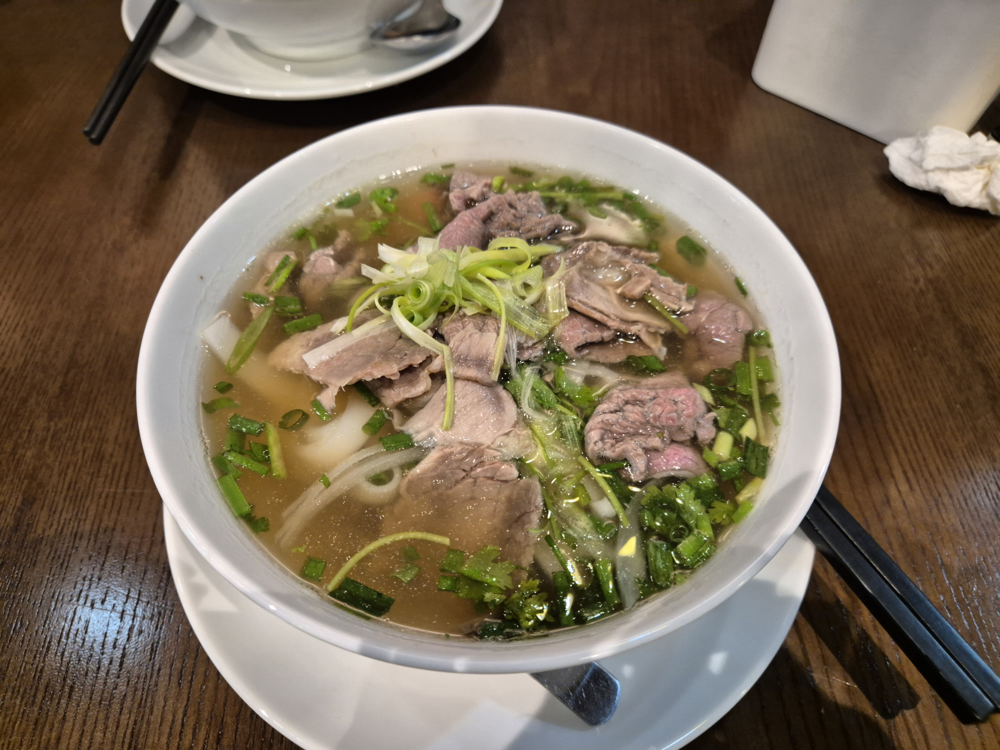
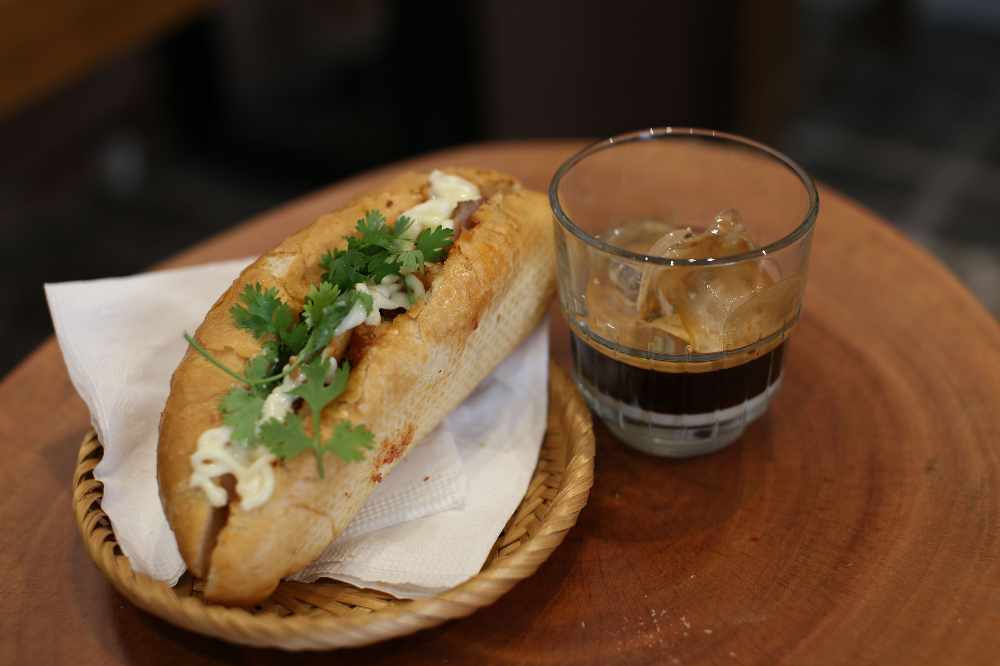
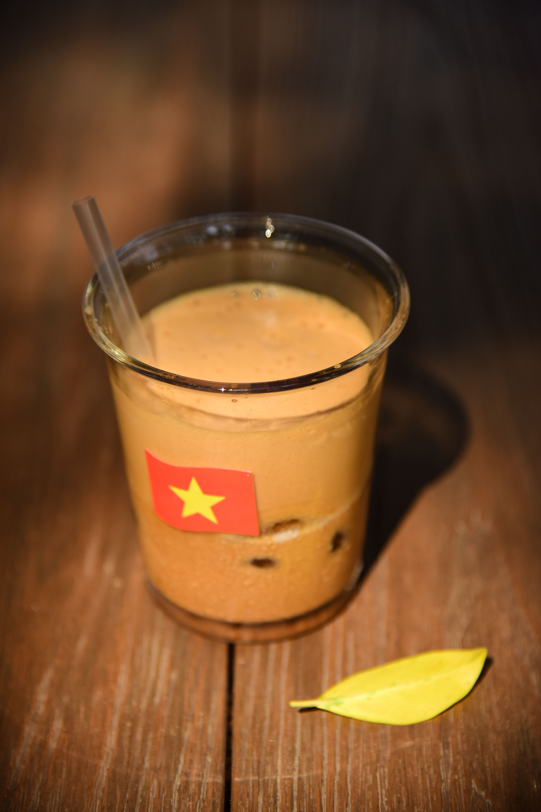

베트남 음식은 기름지지 않고 향이 상쾌해 한국인 입맛에 잘 맞습니다. 아래 9가지만 알아도 어느 도시에서든 맛있게 먹을 수 있어요.
퍼 · 반미 · 분짜 · 미꽝 · 분보후에 · 껌승 · 스프링롤(짜조/고이꾸온) · 반쎄오 · 베트남 커피
국수·면 요리
베트남을 대표하는 쌀국수. 오래 끓인 맑은 육수에 쌀국수와 고기, 향채를 얹어 먹습니다. 소고기는 퍼 보(Phở bò), 닭고기는 퍼 가(Phở gà)예요. 북부는 담백하고, 남부는 숙주·허브·소스를 곁들여 진하게 즐깁니다. 현지인은 아침으로도 많이 먹어요.
전국 어디서나 · 아침 추천
하노이 명물. 숯불에 구운 돼지고기와 완자를 새콤달콤한 소스에 적셔, 쌀국수·채소와 함께 싸 먹습니다. 오바마 전 미국 대통령이 하노이에서 먹어 더 유명해졌어요.
하노이 · 점심 추천다낭·중부 지방 대표 국수. 강황빛 굵은 면에 육수를 자작하게 붓고 새우·돼지고기·땅콩·라이스크래커를 얹습니다. 비빔국수에 가까운 독특한 식감이에요.
다낭·호이안 중부옛 수도 후에식 매콤한 소고기 쌀국수. 레몬그라스 향과 얼큰한 국물이 특징이라, 매운맛을 좋아하는 한국인에게 특히 인기입니다.
중부 후에 · 매운맛밥·빵 요리
바삭한 바게트에 고기·파테·야채·고수·소스를 넣은 베트남식 샌드위치. 프랑스 식민 시절의 영향으로 태어났고, 지금은 세계적으로 유명합니다. 길거리에서 저렴하고 든든하게 한 끼 해결하기 좋아요.
전국 길거리 · 간편식
호치민을 대표하는 서민 한 끼. 부순 쌀로 지은 밥에 숯불 돼지갈비를 얹고 계란·채소를 곁들입니다. 든든하고 가성비가 좋아 현지인 점심 단골 메뉴예요.
호치민 남부별미·간식
바삭하게 튀긴 롤이 짜조(Chả giò / Nem rán), 라이스페이퍼에 새우·채소를 싸 먹는 신선한 생롤이 고이꾸온(Gỏi cuốn)입니다. 느억맘 소스에 찍어 먹는 국민 애피타이저예요.
전국 · 애피타이저강황 반죽을 얇고 바삭하게 부친 베트남식 부침개. 안에 새우·숙주를 넣고, 채소와 라이스페이퍼에 싸서 소스에 찍어 먹습니다. '지글지글' 부치는 소리에서 이름이 붙었어요.
중·남부음료
진한 로부스타 원두에 연유를 넣어 얼음에 마시는 카페 쓰어다(cà phê sữa đá)가 대표. 하노이에서 탄생한 에그커피(cà phê trứng)는 달콤한 계란 크림이 얹혀 디저트처럼 즐길 수 있습니다. 코코넛 커피도 별미예요.
전국 카페 · 필수
맛집 찾을 땐 지도·번역이 필수
현지 맛집을 찾고 메뉴를 번역하려면 데이터가 필요합니다. eSIM을 한국에서 미리 준비하면 도착 즉시 구글맵·번역 앱을 바로 쓸 수 있어요.
베트남 eSIM 보러가기 ※ 제휴 링크로, 이용 시 소정의 수수료를 받을 수 있습니다(독자 추가 비용 없음).정리하면, 베트남은 어느 도시에서든 저렴하고 맛있게 먹을 수 있는 미식의 나라입니다. 위 9가지를 기준으로 삼되, 현지에서 만나는 낯선 음식도 용기 내 도전해 보세요. 그게 여행의 진짜 재미니까요!
※ 음식 이름·표기는 지역과 가게에 따라 조금씩 다를 수 있습니다. 본문 일부 링크는 제휴 링크로, 이용 시 소정의 수수료를 받을 수 있습니다(독자에게 추가 비용은 없습니다).